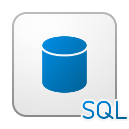
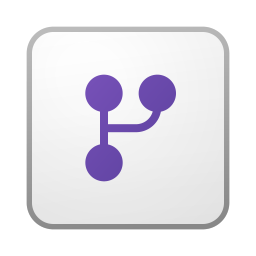

Über mich

Business Analyst & Data Ingenieur / Analyst
Lösungsorientierter Datenexperte mit Erfahrung in BI-Engineering, Data Engineering und Analytics. Spezialisiert auf den Entwurf von Datenmodellen, den Aufbau automatisierter ETL/ELT-Pipelines und skalierbare Lakehouse-Architekturen mit Microsoft Fabric (Lakehouse, Dataflows, Pipelines). Kenntnisse in Power BI, SQL und Python sowie IoT-Konzepten und Systemkonnektivität. Erfahren in der Integration von Betriebs- und IoT-Daten in einheitliche Analyseumgebungen und der Umwandlung komplexer Datensätze in verwertbare Erkenntnisse. Starke Kommunikationsfähigkeiten in Deutsch und Englisch.
- E-Mail: fatihdemirtask@gmail.com
- Webseite: demirtas-fatih.github.io
- LinkedIn: linkedin.com/in/fatih-demirtas47
- Stadt: Bamberg, Deutschland
- Abschluss: B.Sc. Wirtschaftsinformatik
Kenntnisse
Programmiersprachen
Python

R
JavaScript
HTML
CSS
KSQL
Frameworks & Werkzeuge

Power BI

Microsoft Fabric

SQL Database

Tableau
Qlik

Apache Airflow

Spark
Data Factory
One Lake
Data Warehouse

Dataflow
Excel
TYPO3

VS Code
MySQL
SSMS
Git
Google Colab
Jupyter Notebook
NumPy
Docker
Betriebssysteme
macOS
Linux
Windows
Lebenslauf
Berufserfahrung
Industriepraktikant — AKIPAS-Projekt
Mai 2025 – Jan 2026
Rogers Corporation (AES – Advanced Electronics Solutions), Eschenbach i.d. OPf, Germany
- Mitarbeit am Forschungsprojekt „AKIPAS – Augmented AI-Module für Produktionsassistenzsysteme in der integrierten Fertigung metallisierter Keramiksubstrate für die Leistungselektronik".
- Erhebung und Bereinigung von Daten aus primären und sekundären Quellen für Analytics- und KI-Anwendungsfälle.
- Aufbau und Pflege eines DBMS; Migration vorhandener Produktionsdaten in das neue System.
- Erstellung von Dashboards und Datenauswertungen zur Unterstützung der Produktionsoptimierung.
- Operationalisierung von Prozessmodellen im Data-Science-Kontext und Dokumentation von Best Practices.
- Ableitung von Optimierungsempfehlungen mittels statistischer Methoden und Präsentation der Ergebnisse vor Stakeholdern.
Wissenschaftliche Hilfskraft
Mrz 2023 – Heute
Otto-Friedrich-Universität Bamberg, Bamberg, Germany
- Unterstützung akademischer Forschungsprojekte mit Datenanalyse.
- Entwicklung und Optimierung von Datenbanken zur Sicherstellung präziser Forschungsdatensätze.
- Anwendung statistischer Analysen, Datenvisualisierung und Prozessoptimierungsverfahren.
- Mitwirkung bei der Erstellung akademischer Publikationen und internem Reporting.
- Arbeit mit Programmiertools (Python, R) und IT-Projektmanagementaufgaben.
Werkstudent — Digitalisierung & IT
Mrz 2024 – Mrz 2025
Schaeffler Technologies, Herzogenaurach, Germany
- Teil des Teams Connectivity & Process Control Solutions im Industrial Engineering.
- Beitrag zu Digitalisierungs- und Industrie-4.0-Initiativen durch Integration von IT/OT-Systemen.
- Entwurf und Standardisierung von Dashboards mit Power BI und Python.
- Verbesserung von Datenverwaltungsprozessen und Reporting-Workflows.
- Zusammenarbeit mit funktionsübergreifenden Teams zur Implementierung digitaler Lösungen in der Produktion.
Werkstudent — DigiOps für Digital & Automation
Feb 2023 – Mrz 2024
Siemens Healthineers, Forchheim, Germany
- Unterstützung der DigiOps-Abteilungen für Digital & Automation (Service Sales & Transformation).
- Erstellung von Dashboards und automatisierten Berichten mit Power BI, Excel (Pivot, VBA) und SAP.
- Durchführung statistischer Analysen, Abweichungsberichte und Sicherstellung der Datenqualität.
- Cloud-Computing und Datenintegration für Produktionstransformationsprojekte eingesetzt.
- Unterstützung agiler Teams in digitalen Projekten und Beitrag zu Optimierungsinitiativen.
Datenqualitätsanalyst
Jan 2017 – Okt 2019
State Statistical Committee of Azerbaijan Republic, Baku, Azerbaijan
- Erhebung, Validierung und Analyse von Dienstleistungsstatistiken auf nationaler Ebene.
- Entwurf und Pflege von Datenbanken für zuverlässiges statistisches Reporting.
- Qualitätssicherung und Identifikation von Inkonsistenzen in großen Datensätzen.
- Erstellung statistischer Berichte für Regierung und Stakeholder.
- Sicherstellung der Einhaltung internationaler Standards für Datenverwaltung und Reporting.
Praktikant
Jun 2015 – Jul 2016
Amrahbank, Goranboy District, Azerbaijan
- Unterstützung des Geschäftsbetriebs und der Verarbeitung von Finanzdaten.
- Arbeit mit der Bankensoftware Temenos T24 für Dateneingabe und Reporting.
- Unterstützung der Filialmitarbeiter bei Kontoverwaltung und Kundendienstprozessen.
- Erste Einblicke in finanzielle IT-Systeme und Reporting-Tools gewonnen.
Bildung
M.Sc. Internationales Informationssystemmanagement
Okt 2023 – Okt 2025
Otto-Friedrich-Universität Bamberg, Germany
- Masterstudium mit Schwerpunkt Informationssysteme, Data Science und Business Intelligence.
- Kompetenzen: Experimentelles Design, Business Intelligence, Python, R, Optimierung, Projektplanung, Cloud Computing, Git.
- Ausgebaute Kompetenzen in Data Science, Projektmanagement, Datenbanken und Management.
B.Sc. Informationssysteme
Okt 2021 – Okt 2023
Otto-Friedrich-Universität Bamberg, Germany
- Angewandtes Wissen in Datenbanken, Programmierung, Cloud Computing und Optimierung.
- Gestärkte Kenntnisse in Englisch, Datenanalyse und Projektmanagement.
B.Sc. Wirtschaftswissenschaften
Okt 2009 – Jun 2013
Azerbaijan State University of Economics (UNEC), Baku, Azerbaijan
- Bachelorabschluss in Wirtschaftswissenschaften mit Schwerpunkt Management und Geschäftsprozesse.
- Grundlagen in Wirtschaftsanalyse, Statistik und Organisationsmanagement erworben.
Zertifikate
- Microsoft Certified: Fabric Data Engineer Associate Ausgestellt Dez 2025 • Credential ID: 9282D54B6D4C7883 • Kenntnisse: Microsoft Fabric, Data Engineering, Data Pipelines, ETL, Data Integration, Lakehouse, Data Warehousing, SQL, Big Data, Cloud Data Platforms
-
Microsoft Certified: Power BI Data Analyst Associate
Ausgestellt Feb 2025 • Credential ID: B5755D0006DA82F2 • Kenntnisse: Power BI, Data Analysis, Data Visualization, DAX, Power Query, Data Modeling, Business Intelligence (BI), Dashboard Design, Reporting, KPIs
- Mindreading with AI — Collaborative Innovation Networks (MIT) Ausgestellt Aug 2024 • Kenntnisse: Projektmanagement, Datenvisualisierung, Statistische Analyse
-
Atlassian Agile Project Management — Professional Certificate Ausgestellt Feb 2025 • Kenntnisse: Scrum, Agile Testing, Projektplanung, Jira
-
-
Data Engineering Foundations — Professional Certificate (Astronomer) Ausgestellt Feb 2025 • Kenntnisse: Data Engineering, SQL, Warehousing, Governance
-
Docker Foundations — Professional Certificate Ausgestellt Feb 2025 • Kenntnisse: Docker-Produkte, Containerisierung
-
DBeaver — Certificate of Completion Kenntnisse: Datenbanken, DBeaver
{kind=link}
{kind=link}
{kind=link}
{kind=link}
{kind=link}
{kind=link}
{kind=link}
{kind=link}
{kind=link}
{kind=link}
{kind=link}